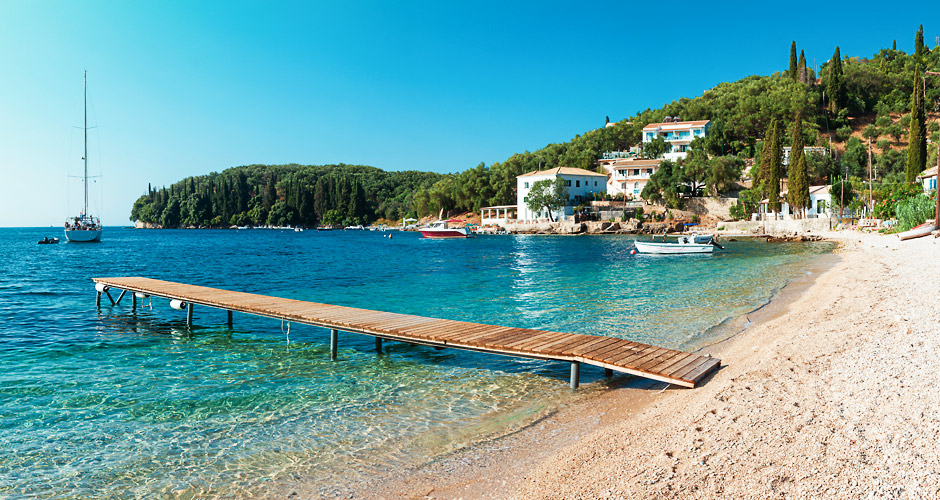
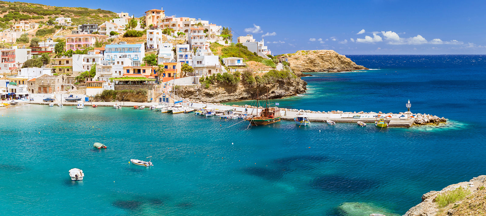
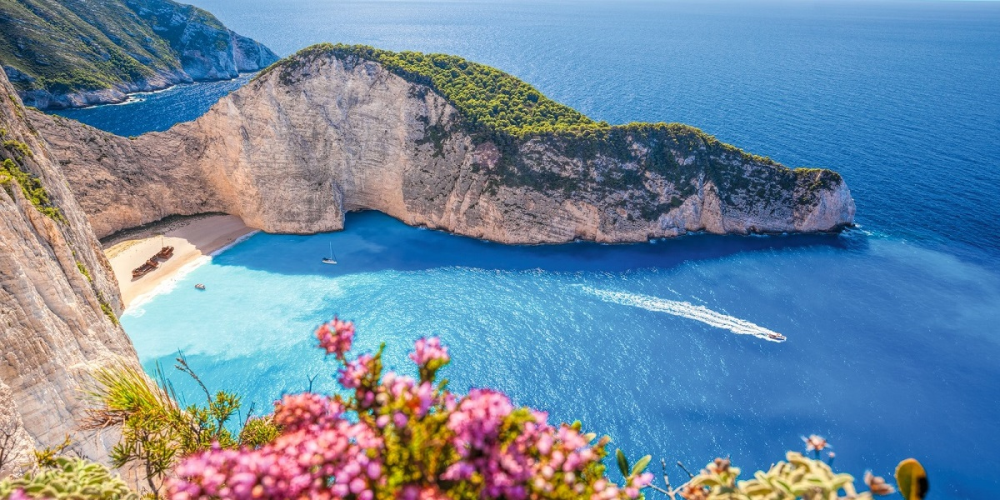
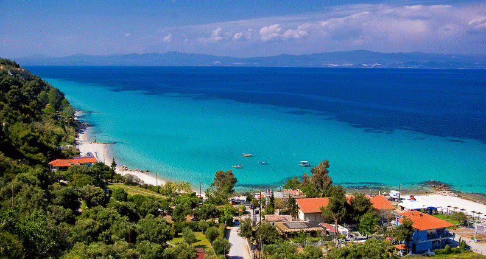

Ce vizităm în Grecia?
Corfu
Corfu este una dintre cele mai populare destinatii din Grecia. Cu plaje magnifice in est si piscuri stancoase, golfuri adanci si plaje izolate in vest, Corfu beneficiaza de intregul magnetism turistic „obisnuit” al insulelor grecesti... si poate chiar de mai mult. Insula se evidentiaza prin muntii virgini si plajele inca neatinse de exaltarea turistica, dar si prin arhitectura venetiana antica a bisericilor, a muzeelor si a monumentelor istorice. Iata cateva dintre atractiile turistice istorice majore ale insulei Corfu: Palatul Achillion, care se afla in zona Gastouri, la 7 kilometri sud-vest de orasul Corfu.Acesta se mandreste cu o arhitectura neoclasica si cu statuetele celebrului Ahile, eroul din mitologia greaca. Gradinile sale colorate au vedere spre orasul Corfu si spre Marea Ionica, frumusetea lor fiind ilustrata in filmul „Doar pentru ochii tai” din seria James Bond. Muzeul Antivouniotissa, care se afla in „Muragia”, centrul vechi al orasului Corfu, in interiorul bisericii „Fecioarei Antivouniotissa”, construita in secolul al 15-lea. Astazi, Antivouniotissa este singura biserica-muzeu din Grecia, unde sunt expuse artefacte precum icoane, obiecte antice, amintiri de familie si diferite picturi. Muzeul de Arta Asiatica, care (sau Palatul Sf. Mihail si Sf. Gheorghe) este unic in Grecia si se afla in cladirea fostului Palat Regal - Palaia Anaktora, din centrul vechi al orasului Corfu. Muzeul este unul dintre cele mai mai apreciate din Europa intrucat contine colectii particulare valoroase, oferite prin donatii de pasionati. Muzeul de Bancnote,care se afla la 500 de metri de mers pe jos de piata principala a orasului Corfu, (Piata Sfantul Spiridon), la ultimul etaj al cladirii Alpha Bank - un conac frumos construit in stil neoclasic. Aici poti vedea matritele primelor bancnote, plicuri si timbre antice, precum si stampile vechi din cauciuc. Muzeul Scoicilor este situat in Benitses, la aproximativ 9 kilometri de orasul Corfu, si, in ciuda dimensiunilor mici, detine cele mai bogate colectii de scoici din intreaga Europa.
Creta
Cu o linie de coasta de peste 1.000 de kilometri si un relief variat, Creta te imbie cu numeroase obiective si facilitati de distractie. Insula este impartita in patru cartiere: Chania, Rethymnon, Heraklion si Lassithi. In Chania gasesti defileul Samaria si plaje splendide, in special in Golful Kissamos. In Rethymnon te bucuri de arhitectura orasului si de vechiul port venetian „ornat” cu taverne traditionale, iar in Heraklion descoperi antichitatea printr-o vizita la Palatul Knossos. Lasitthi se remarca prin unicitatea padurii de palmieri de pe plaja Vai, prin frumusetea Muntelui Dikti si prin inaltimea impunatoare a Platoului Lasithi.
Laguna Balos se afla pe coasta nord-vestica a insulei si este o fasie de nisip alb, cu nuante de roz, inconjurata de stanci abrupte, cufundate in apa. Balos se afla in nord-vestul peninsulei Gramvousa, la 60 de kilometri nord-vest de Chania Town si poti ajunge la ea prin doua cai: cu un jeep pe drumul spre Kaliviani, un sat aproape de Kissamos, sau cu ambarcatiunea, intr-o excursie organizata.
Daca alegi varianta autoturismului, trebuie sa stii ca vei avea de mers pe jos mai bine de un kilometru pe un traseu accidentat. Din parcarea organizata, turistii trebuie sa coboare spre laguna pe o poteca incadrata de munte si mare, cu scari abrupte. Efortul depus este destul de mare, atat la coborare cat si la urcare, insa peisajul din varful scarilor este de o frumusete izbitoare, adesea comparata cu frumusetea Caraibelor.
Manastirea toplou Este o manastire istorica din secolul al 15-lea, care s-a prabusit in urma cutremurului din 1612 si a fost reconstruita cu ajutorul venetienilor. Odata ajuns la Manastirea Toplou, viziteaza o capela micuta izolata, care se afla in partea dreapta a drumului. In partea stanga a manastirii, vei zari o moara din secolul trecut, care sustinea pe vremuri economia manastirii.
Platoul Lasithi. Este o zona agricola fertila cunoscuta de-a lungul secolelor pentru agricultura infloritoare. Peste tot de-a lungul campiei vei zari mori albe de vant. De-a lungul sau poti vizita satele mici si tipic cretane Tzermiádo, Agios Giorgos, Psyró, Marmakéto, Agios Konstatínos si Avrakódes.
Spinalonga sau „Temnita Leprosilor” este o mica insula situata pe coasta nord-estica a Cretei, faimoasa pe plan international datorita istoriei sale plina de culoare. In secolul al XVI-lea, venetienii au ridicat pe Spinagoga o fortificatie impresionanta, devenita astazi o puternica atractie turistica. In anul 1904, cand Creta a iesit de sub stapanirea venetienilor, cretanii au transformat mica insula intr-o colonie pentru leprosi. De aici si denumirea de „Temnita leprosilor”. Primii 200 de bolnavi au fost cretani, ulterior insula devenind locuinta miilor de bolnavi de lepra de pe intreg teritoriul Greciei. Pe insula se afla un cimitir, unde au fost ingropati peste 1.500 de bolnavi. Poti ajunge pe Spinalonga daca mergi intr-o excursie de-o zi din Plaka, Elounda si Agios Nikolaos sau din Lasithi.
Zakynthos
Vacanta in Zakynthos inseamna istorie, cultura, traditie si, bineinteles, multa distractie. Incepe-ti vacanta din inima insulei si anume - Zakinthos Town. Viziteaza monumentele istorice, strabate stradutele inguste, mananca greceste si apoi inchiriaza o masina pentru a vizita obiective turistice aparte. Include in planul de vacanta si o vizita la binecunoscutele Pesteri Albastre din nord-vestul insulei si la celebra plaja cu epava Navagio, unde poti ajunge doar cu ambarcatiunea. Piata Solomos. De jur imprejurul pietei sunt cladiri cu caracteristici arhitecturale specifice insulei, cu ferestre si arcade. In centrul pietei poti admira bustul sculptat al marelui poet grec D. Solomos, biblioteca publica, in care se regasesc peste 55.000 de volume, si Muzeul Post-Bizantin, cu statui impodobite cu aur, icoane si gravuri de arta. Strata Marina sau (strada Lomvardou K.) este strada care inconjoara portul. Ea incepe din Piata Solomos si isi are capatul la Biserica Sf. Dionysos, fiind cea mai aglomerata strada a insulei in sezonul turistic datorita privelistii si a numarului mare de baruri si cafenele. Piata Aghios Markos gazduieste Muzeul Solomos, Kalvos si Eminent Zakynthians, in care se regaseste bustul sculptat al poetului national al Greciei, opera realizata de Georgios Broutos in 1902. In 1797, Aghios Markos a fost centrul unei rascoale, cand localnicii au incendiat Libro d’ Oro si au plantat in loc un pom, denumit "Copacul libertatii". Astazi, piata cu stradute pietruite este cel mai cunoscut loc de intalnire al turistilor, dar si al localnicilor. Rouga este denumirea strazii Alexandros Romas, care incepe de la Piata Aghios Markos si traverseaza aproape intregul oras. Strada se remarca prin arhitectura arcadelor si este cunoscuta de secole drept principalul centru comercial al orasului Zakynthos. Castelul Venetian se afla pe dealul orasului Zakynthos, in locul vechii acropole, cunoscuta sub numele de Psofis. Poarta de intrare in Castelul Venetian evidentiaza influenta arhitecturii venetiene asupra orasului prin simbolul „Leului de San Marco”. Castelul se afla printre pinii dealului Bohali, la marginea orasului Zante, si ofera privelisti frumoase asupra orasului si a Marii Ionice. Dealul Stranis se afla la 2 kilometri de Zakynthos Town si este locul in care poetul Dionysios Solomos a compus „Imnul Libertatii”, devenit ulterior imnul national al Greciei. Locul a fost si sursa de ispiratie pentru „Free Besieged”, piesa scrisa dupa asediul asupra orasului Messolonghi.
Kassandra - Halkidiki
Braţul Kassandra se caracterizeaza prin plaje cu nisip alb si promontorii stancoase, acoperite cu pini. Marile atractii turistice se afla in statiunile importante precum Nea Moudania, Nea Potidea, Sani, Kallithea si Kryopigi.
Nea Moudania Este o zona promitatoare, cu o pozitie strategica si o multime de oportunitati in dezvoltarea turistica. Vara, in statiune se organizeaza „Festivalul Sardinelor” si „Festivalul Marii”, doua mari evenimente care atrag anual o multime de turisti.
Nea Potidea si la faimosul canal ce separa demult Kassandra de zona continentala Halkidiki. Astazi, un simplu pod serveste drept trecatoare spre partea zbuciumata a statiunii, amenajata cu baruri pe plaja si cluburi de sporturi nautice.
Nea Fokea este una dintre zonele in care mai poate fi vazut Turnul Cetatii Bizantine si care ofera o panorama memorabila a dealurilor din Sithonia si a coastei Kassandra.
Kallithea este celebra statiune considerata inima vietii de noapte a peninsulei.
Hanioti este o statiune bogata in izvoare si paduri dese.
Nea Skioni, o plaja si un port de pescari unde poti petrece un concediu linistit pentru ca de aici incepe linia de coasta cu o multime de plaje nisipoase pustii, care duce in Kalandra si Capul Possidi.
Pefkohori penultima asezare a bratului Kassandra, impartita in doua: satul vechi, cu case mici, gradini generoase si localnici ospitalieri, si zona moderna. La fel, locurile frumoase de aici poti sa le descrii in continuu, dar mai bine deja sa te pornesti la drum pentru o aventura de neuitat.